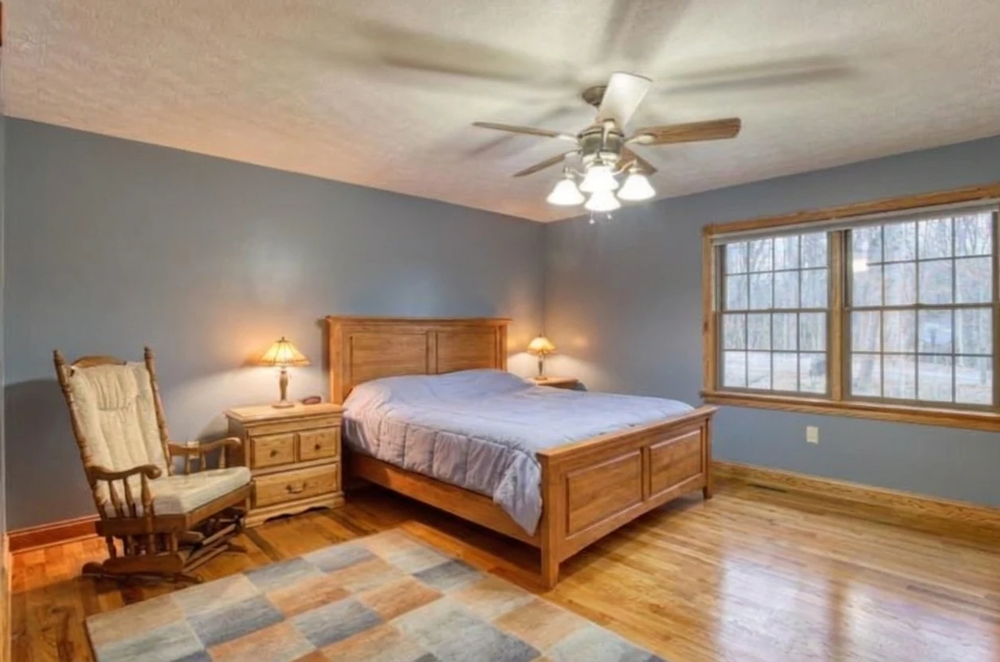

Prior-listing photo · Bright MLS watermark retained
Oak, glass and fieldstone
A glass gable brings the woods into the two-story great room. Red oak floors and trim lend warmth; a wood stove sits within the fieldstone chimney, which rises from the stone-skirted foundation to the ridge.
Built in 2008, this log-sided house pairs a main-floor suite with a second bedroom and open loft upstairs. Two full baths, a half bath, main-floor laundry and an attached garage make everyday living easy.
- Built
- 2008
- Bedrooms
- 2
- Baths
- 2 full · 1 half
- Lower level
- Unfinished walk-out
Room to gather, space to retreat
The kitchen opens to dining and the great room, with a granite island, oak cabinetry and stainless appliances. Venetian Bronze faucets and antiqued-brass cabinet hardware bring deeper tones to the wood and stone.

 Digitally simulated image
Digitally simulated image
Digitally simulated imageThe main-floor bedroom is painted in muted Debonair blue. Upstairs, Oyster Bay brings a soft green to the second bedroom and its walk-in closet; Sea Salt ties the two full baths together. An Alabaster hallway connects the rooms, while the loft offers a place to read, watch a film or work above the great room.
Explore the galleryTwo floors, connected by the great room
Keep daily life on the main floor, with a bedroom suite, kitchen and laundry close at hand. Upstairs, the second bedroom sits over the garage, away from the loft overlooking the living space.
An unfinished walk-out basement adds room for a future project. A separate basement drawing set conveys with the house; it does not add finished bedrooms to the home.
Explore floor plans
Porch mornings, open-sky nights
A 45-foot screened porch stretches along the house, with room for meals and long afternoons outside. The wrap deck has a Dark Walnut finish. At its far end, the hot tub sits under an open dark sky, with the woods all around.
 Digitally simulated image
Digitally simulated image Digitally simulated image
Digitally simulated imageA gravel path leads across the lawn to a stone firepit. Evergreens line the west edge, and a refreshed gravel drive welcomes you home.
Come see 323 Colonial
Walk through the rooms, step onto the porch and take in the woods. Email the realtor to arrange a visit.
Request a showing